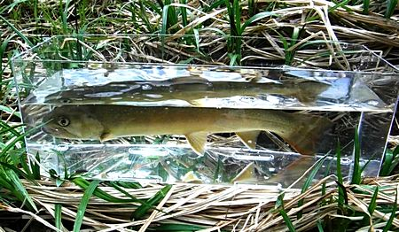
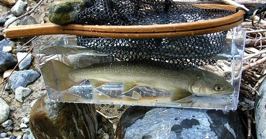
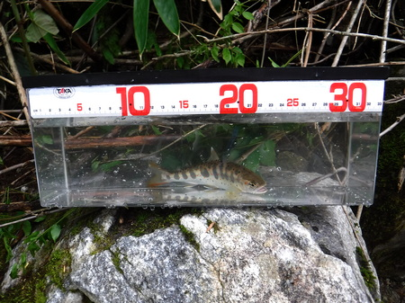

私のお気に入り
渓流魚撮影用ケース
製作のきっかけ
徒歩通勤の途中に２ヶ所も百円ショップがある。そのうちの１店、ダイソーをブラブラしている時に、ミニチュアカーや小さなフィギュアなどのコレクターが、収集したアイテムを飾るため、と思われる透明プラスチックケースが目に入った。
以前、Youtubeでこんなケースを使って魚を撮影している動画を見た事があったなぁ.....などと思って手に取って見ると、渓流魚撮影用ケースとして使うのになかなか良さそうである。
さっそく、最も幅の広い400円の製品を持ってレジに向かう。大きさが手頃で、幅33cm、奥行き10cm、高さ12cm程度である。軽量だが、持ち運ぶには少々嵩張るのが難点だと思われた。デイパックに入れておいて、背中から転倒したら間違いなく割れるだろう。
使用第１回目
いつもの場所に、とりあえず買ったままの状態で、デイパックに入れ、中には雨具とレインハットを詰めて携行した。幸先良く、30cm のイワナが釣れた。さっそくケースに水を汲み、安定する場所に据えてから、慎重にランディングネットの中のイワナを入れてみる。

ところが、ケースの蓋を忘れたので、今にも飛び出して逃げられそうである。また、ケースに目盛りが付いていないので、魚の大きさがわかりにくかった。
まぁ、こんな物か。と思い、元気になったイワナをリリースしてやった。気を良くして次のポイントを攻めると、またしても強い引き！ ネットに収まったのは、ケースの横幅いっぱいの、33cm のイワナだった。

せっかくの被写体に逃げられては困るので、ランディングネットを載せ、その上に重しの石を置いて、万全の体制で写真と動画を映す。いきなり撮影用ケースのデビュー戦で、尺イワナが２尾も釣れるとは出来過ぎだなぁと思いつつ、次回に向けての改良構想を温めた。
使用第２回目
魚の大きさが良く分かるように、釣具店で一番安かったメジャーのシールを貼ってみた。シールの上と、側面をクリアガムテープで防水補強した。これで目盛りシールに水が浸みないだろう。
百円ショップでも裁縫用のメジャーが買えるのだが、目盛りが細かすぎて、撮影しても見えないのだ。さらに、表面に擦り傷が付くことを防ぐために、やはりダイソーで枕カバーの大きめのやつを購入し、それにすっぽり包んでデイパックに入れた。
２回目は、久しぶりに別の川に出かけた。可愛いアマゴが釣れたが、なかなかケースを安定して、良い構図で置ける場所が少ない。今日は黒い蓋を忘れずに持参したので魚に逃げられる心配をせず、まずまずきれいに動画が撮せた

しかし、見栄を張って、大げさな目盛りシールを貼った途端に小さいのしか釣れなくなった。
魚をランディングネットに入れた状態では、なかなか綺麗な写真が写せなかったのだが、これで良し。撮影時に魚を弱らせてしまう可能性も減るだろう。来たるべき９月の遠征では、このケースを持って皆と深山へ分け入るのだ。
私のお気に入り 目次へ
サイトマップ
ホームへ
お問い合わせ